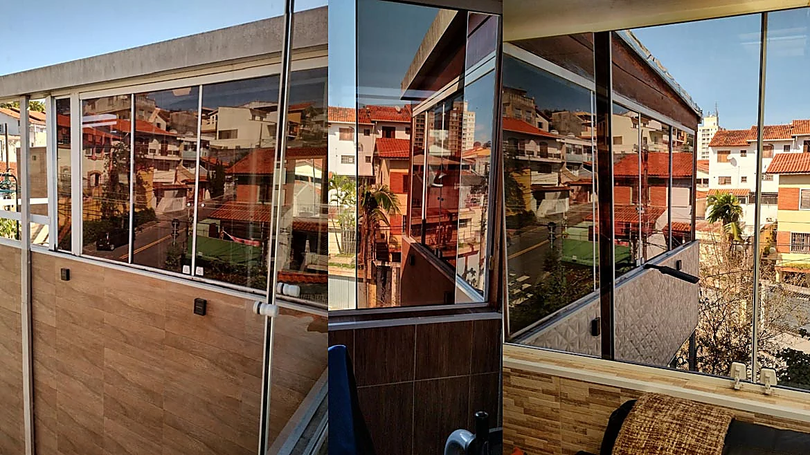
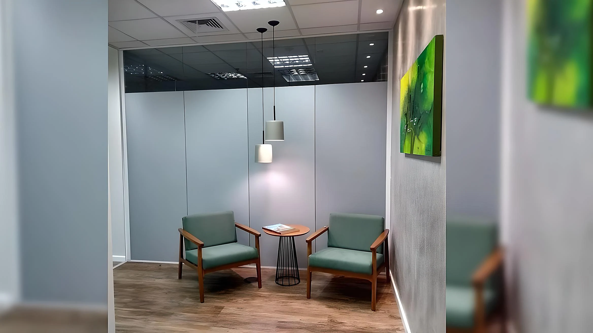

Película Espelhada Funciona à Noite? Entenda Por Que Dá para Ver Dentro e Como Resolver
A película espelhada dá privacidade durante o dia, mas à noite o efeito se inverte. Entenda por que isso acontece e como garantir privacidade a qualquer hora.
Quem instala película espelhada costuma ficar satisfeito no primeiro dia: de fora, o vidro vira um espelho, e de dentro a vista continua livre. A surpresa vem à noite. Com as luzes acesas, quem está na rua passa a ver o ambiente, e quem está dentro vê o próprio reflexo no vidro.
Não é defeito da película nem erro de aplicação. É assim que ela funciona.

Por que a película espelhada "inverte" à noite?
A película espelhada reflete parte da luz e deixa passar outra parte. O efeito espelho aparece do lado mais iluminado.
- De dia, a rua é muito mais clara que o interior. Quem olha de fora vê o reflexo do céu e dos prédios e não enxerga dentro.
- À noite, o interior iluminado fica mais claro que a rua. O efeito espelho passa para o lado de dentro: quem está na rua vê a sala, e quem está na sala vê o próprio reflexo.
Por isso não existe película espelhada que dê privacidade de dia e de noite. Toda película que deixa ver através também deixa ver no sentido contrário quando a luz se inverte.
O que fazer quando você precisa de privacidade à noite?
1. Combinar a película com cortina ou persiana. É a solução mais comum em casas e apartamentos. A película cuida do calor e da privacidade durante o dia, e a cortina resolve a noite.
2. Usar adesivo jateado nas áreas que pedem privacidade o tempo todo. O jateado embaça o vidro nos dois sentidos, de dia e de noite, e continua deixando a luz passar. Funciona bem em banheiros, salas de reunião, consultórios e na parte baixa de janelas voltadas para a rua.
3. Fazer faixas. Dá para usar jateado só na altura dos olhos e película espelhada no restante do vidro. Você mantém a vista e a luz natural e protege a parte que importa.
4. Escurecer mais o vidro. Películas mais escuras diminuem o que se vê de fora à noite, mas não eliminam, e também reduzem a luz que entra durante o dia. É um meio-termo que precisa ser bem pensado para não deixar o ambiente sombrio.

Antes de escolher, responda a três perguntas
- Em que horário você precisa de privacidade? Só de dia: película espelhada. De dia e de noite: jateado ou película com cortina.
- O vidro recebe sol direto? Se recebe, a película também ajuda a reduzir o calor, e isso conta na escolha.
- Você quer manter a vista? Se quer, faixas jateadas na altura certa costumam ser o melhor equilíbrio.
Para ambientes de trabalho, veja também nosso guia sobre adesivo jateado em escritórios.
Como a Momentvm Opvs ajuda
Na visita técnica, olhamos a posição do vidro, a incidência de sol e o uso do ambiente de dia e de noite. Depois indicamos a combinação certa: película, jateado ou os dois. Levamos amostras para você ver o efeito no próprio vidro antes de decidir.
Quer privacidade de dia e de noite sem perder a luz natural? Fale com a Momentvm Opvs e peça uma avaliação técnica.
Momentvm Opvs — Comunicação Visual e Decoração
30 anos de experiência profissional.
São Paulo — SP
Você imagina, nós tornamos realidade.